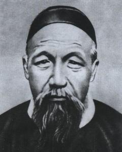
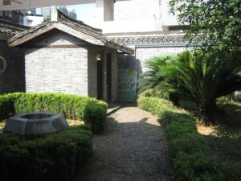
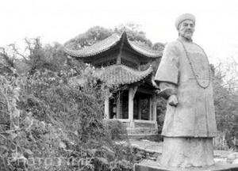

晚清重臣曾国藩
点此处返回
曾国藩（1811年11月26日－1872年3月12日），初名子城，字伯涵，号涤生，宗圣曾子七十世孙，中国近代政治家、战略家、理学家、文学家，湘军的创立者和统帅。
道光十八年（1838年），曾国藩中进士，入翰林院，为军机大臣穆彰阿门生，累迁内阁学士，礼部侍郎，署兵、工、刑、吏部侍郎，与大学士倭仁、徽宁道何桂珍等为密友，以“实学”相砥砺。太平天国运动时，组建湘军，经过多年鏖战后攻灭太平天国。
曾国藩主张凡事要勤俭廉劳，不可为官自傲。他修身律己，以德求官，礼治为先，以忠谋政，在官场上获得了巨大的成功；在他的倡议下，建造中国第一艘轮船，建立第一所兵工学堂，印刷翻译第一批西方书籍，安排第一批赴美留学生。曾国藩的崛起，对清王朝的政治、军事、文化、经济等方面都产生了深远的影响，他是中国近代化建设的开拓者。
曾国藩与胡林翼并称“曾胡”，与李鸿章、左宗棠、张之洞并称“晚清中兴四大名臣”。官至两江总督、直隶总督、武英殿大学士，封一等毅勇侯，谥号“文正”，后世称“曾文正”。
。

(曾国藩肖像)
个人经历：嘉庆十六年十一月十一日（1811年11月26日），曾国藩出生于湖南长沙府湘乡荷叶塘白杨坪（今湖南省娄底市双峰县荷叶镇大坪村）的一个普通耕读家庭。兄妹九人，曾国藩为长子。祖辈以务农为主，生活较为宽裕。祖父曾玉屏虽少文化，但阅历丰富；父亲曾麟书身为塾师秀才，作为长子长孙的曾国藩，自然得到二位先辈的伦理教育了。曾国藩五岁启蒙，六岁入家塾“利见斋”。
道光六年（1826年）春，曾国藩应长沙府童子试，名列第
曾国藩居住过的 欧阳故宅
曾国藩居住过的 欧阳故宅(16)
七名。
道光十年（1830年），曾国藩前往衡阳唐氏宗祠读书，一年后转入湘乡涟滨书院。
道光十二年（1832年），曾国藩考取了秀才。
道光十四年（1834年），曾国藩进入长沙岳麓书院演习，同年参加湖南乡试，中试第三十六名举人，并动身入北京准备来年的会试。
道光十五年（1835年），曾国藩会试未中，寓居北京长沙会馆读书。次年恩科会试再次落第，于是返回长沙，于同乡刘蓉、郭嵩焘等居于湘乡会馆。
十年七迁
道光十八年（1838年），曾国藩再次参加会试，终于成功登第，殿试位列三甲第四十二名，赐同进士出身，自此，他一步一步地踏上仕途之路，并成为军机大臣穆彰阿的得意门生。朝考列一等第三名，道光帝亲拔为第二，选为翰林院庶吉士。
道光二十年（1840年），散馆考试，名列二等十九名，授翰林院检讨。
道光二十三年（1843年）7月，钦命曾国藩为四川乡试正考官。8月，补授翰林院侍讲。12月，曾国藩充文渊阁校理。
道光二十四年（1844年），转侍读。
道光二十五年（1845年）3月，任会试同考官。5月，升詹事府右春坊右庶子。9月，转左庶子，不久升侍讲学士。12月，充日讲起居注官。
道光二十六年（1846年），充文渊阁直阁事。
道光二十七年（1847年），大考二等，6月，升任内阁学士加礼部侍郎衔。
道光二十八年（1848年），稽察中书科事务。
道光二十九年（1849年）正月，授礼部右侍郎。8月，署兵部左侍郎。次年6月，署工部左侍郎。在京十多年间，曾国藩就是这样坚韧不拔地沿着这条仕途之道，步步升迁到二品官位。十年七迁，连跃十级。

（曾国藩故居）
曾国藩故居富厚堂，又名毅勇侯第，是曾国藩的侯府，坐落在位于湖南娄底市双峰县东部的荷叶镇富托村，与湘乡市、湘潭县、衡山县、衡阳县毗邻，总占地面帜四万多平方米，主体建筑近一万平方米，是典型的沿中轴线对称的明清回廊式建筑群体。富厚堂坐南朝北，背倚的半月形鳌鱼山从东南西三面把富厚堂围住。从远看去，富厚堂好似坐在一张围椅中。周围自然环境优美，后山上树木茂密，古树参天。门前是一片较开阔的平地，平地中有小河向东流去，平地四周峰峦叠嶂，群山环抱。
曾国藩故居已被有关部门确定为省级重点文物保护单位。
其代表性建筑，主要有“白玉堂”、“黄金堂”、“万年堂”、“大夫第”、“富厚堂”等（“有恒堂”为曾国葆故居）。曾国藩先后晋升为两江总督、直隶总督，诏加“太子太保”，封“一等毅勇侯”，授“英武殿大学士”，升“光禄大夫”，谥称“曾文正公”。同治4年（1865年）秋，素无终身官场打算的曾国藩，准备先动员家眷回籍“立家作业”，自己以后再作引退，因夫人欧阳氏对旧居黄金堂门前“塘中有溺人之事，素不以为安”，即令其子曾纪泽，“回湘禀商两叔”，移兑富托庄屋，由曾国潢、曾国荃、曾纪泽经手主持，依照候府规模，花十年功夫营造了富厚堂。富厚堂占地四万余平方米，建筑面积9202.86平方米，为土石砖木结构，回廊式风格，内外群有八本堂、求厥斋、旧朴斋、艺芳馆、思云馆。八宝台、辑园、凫藻轩、棋亭、藏书楼等各种建筑，当年正门上悬挂着“毅勇侯第”朱地金字直匾，门前花岗石月台上飘扬着大清龙凤旗、湘军帅旗、万人伞等，景象颇为壮观。整个建筑虽具侯府规模却古朴大方，虽有雕梁画栋却不显富丽堂皇，基本体现了曾国藩对建宅“屋宇不肖华美，却须多种竹柏，多留菜园，即占去四亩，亦自无妨”的意旨。1866年秋，主楼竣工，曾国藩夫人、子女和儿媳即回籍住进了富托新屋。
曾国藩墓
曾国藩墓(3)
富厚堂原称八本堂，取曾国藩的“读书以训诂为本，诗文以声调为本，事亲以得欢心为本，养生以少恼怒为本，立身以不妄语为本，居家以不晏起为本，居官以不要钱为本，行军以不扰民为本“而得名。后曾纪泽据《后汉书》“富厚如此”而改现名。富厚堂虽不胜家华，然曾国藩得知修屋花钱七千串而为之骇叹，他在同治六年二月初九日的日记中写道：“接腊月甘十五日家信，知修整富厚堂屋宇用钱共七千串之多，不知何以浩费如此，深为骇叹！余生平以起屋买因为仕宦之恶习，誓不为之。不料奢靡若此，何颜见人！平日所说之话全不践言，可羞孰甚！屋既如此，以后诸事奢侈，不问可知。大官之家子弟，无不骄奢淫逸者，忧灼曷已！”
富厚堂是否可称“曾国藩故居”，社会上颇有争论。
1995年10月，双峰县人民政府经中共中央宣传部批准，举办了全国首次曾国藩学术研讨会，来自全国各地的专家学者100多人参加了会议，并专程到富厚堂参观。

（曾国藩雕像）
点此处返回